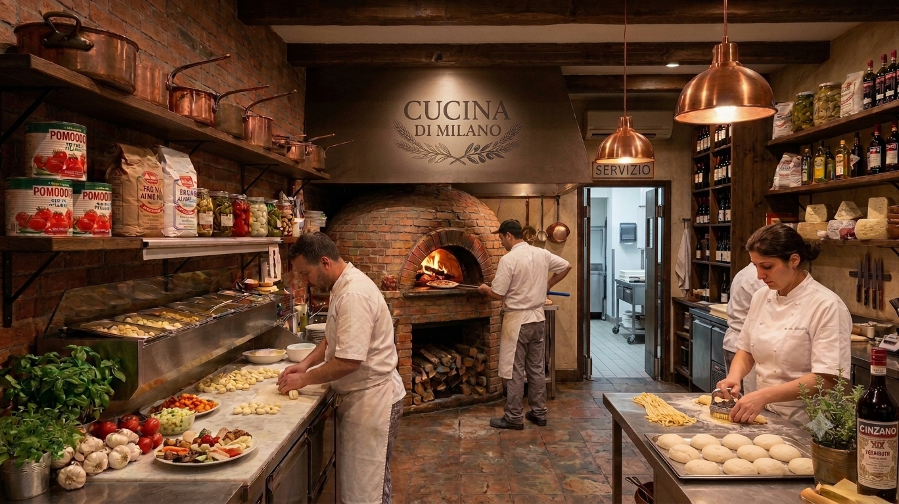

Bem vindo ao Cucina di Milano!
Venha ter uma experiência gastronômica única! Saboreie pratos tradicionais da cozinha italiana preparados com ingredientes selecionados.

Nossa História:
Fundado em 1990, na cidade do Rio de Janeiro, Cucina di Milano é um restaurante fictício especializado em comida italiana feita com amor.
Venha nos conhecer:
Endereço: Av. das Massas, 999
Rio de Janeiro - RJ
Telefones: (21)xxxx-xxxx / (21)xxxxx-xxxx